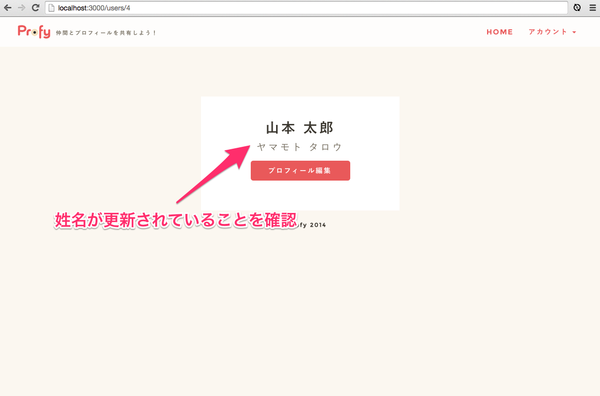

- 終了まであと10日
 大宅 誠人
大宅 誠人
大宅 誠人ログインしたユーザーの情報を表示するページをつくりましょう。こちらが作成するユーザーページのイメージです。
新機能をつけるときは、やみくもに実装していくのではなく事前に筋道を立てておくことが大事です。
新たにページを作成するときは次の4ステップが必要となります。
この順番に実装していきましょう。
まずはじめにルーティングを設定していきましょう。
resourcesメソッドに対象となるリソース名を指定した1行をルーティングとして記述するだけで、Railsのリソースの7つのアクションで記載した7つのアクション名に対してのルーティングが自動的に設定されます。
【例】
1 2 |
Rails.application.routes.draw do
resources :books
|
ターミナルにて bundle exec rake routes コマンドを実行すると以下のように7つのルーティングが設定されているのが確認できます。
【例】
1 2 3 4 5 6 7 8 9 |
Prefix Verb URI Pattern Controller#Action
books GET /books(.:format) books#index
POST /books(.:format) books#create
new_book GET /books/new(.:format) books#new
edit_book GET /books/:id/edit(.:format) books#edit
book GET /books/:id(.:format) books#show
PATCH /books/:id(.:format) books#update
PUT /books/:id(.:format) books#update
DELETE /books/:id(.:format) books#destroy
|
また、controllerでbefore_actionの編集をする際に、exceptやonlyオプションを組み合わせると特定のアクションを指定することができることと同様に、ルーティングでresourcesメソッドを編集する際にはルーティングを特定することができます。
1 2 3 4 |
Rails.application.routes.draw do
devise_for :users
# resourceメソッドで、users_controllerのshowアクションを指定してください。
root to: "top#index"
|
bundle exec rake routesを実行して追加されたルーティングを確認してください。1 2 3 4 5 6 |
$rake routes
(省略)
new_user_confirmation GET /users/confirmation/new(.:format) devise/confirmations#new
GET /users/confirmation(.:format) devise/confirmations#show
user GET /users/:id(.:format) users#show
root GET / top#index
|
railsの処理の流れは必ずルーティング→コントローラー→ビューの順番となります。
このルーティングは例えば開発環境なら、localhost:3000/users/10にリクエストがきたときはusers_controlerのshowアクションに処理を渡すというルーティングになります。10という数を取得するためには、アクションのメソッドの中でparams[:id]と指定すれば良いでしょう。
コントローラーはほとんどの場合、コマンドで生成します。
既に知ってる人も多いと思いますが、通常コントローラー名はusersのように複数形にします。
rails g controllerで生成されるファイルについては、ターミナルの表示を確認してください。
showアクションに対応するビューファイルを作成しましょう。
まだ、コントローラーにアクションを設定していなかったので、まずはアクションの定義から始めましょう。
1 |
class UsersController
|
新規作成はSublimeTextからフォルダを選んで右クリックなどで行ってください。
今はまだユーザーの情報がメールアドレスしかないので、とりあえずメールアドレスを表示しておきます。
1 |
<%= @user.email %>のユーザーページです。
|
15 16 17 18 19 20 21 |
<li class="dropdown">
<a href="#" class="dropdown-toggle" data-toggle="dropdown" role="button" aria-expanded="false">アカウント <span class="caret"></span></a>
<ul class="dropdown-menu" role="menu">
<li><%= link_to "マイページ", user_path(current_user) %></li>
<li><%= link_to "ログアウト", destroy_user_session_path, method: :delete %></li>
</ul>
</li>
|
user_pathはresourcesでルーティングを生成したときに自動で生成されるヘルパーメソッドです。
引数にidを指定すると自動でパスに変換されます。
1 |
user_path(10) # => 'users/10'に変換される
|
実際にどんなパスが設定されるのか確認してみましょう。
rails sでサーバーを起動してヘッダーのマイページに設定されているパスを要素の検証で確認してください。ここまででマイページを作成することができました。
今はまだマイページとして表示する情報が何もないので、項目を増やしていきましょう。
また、それらを更新できるようにしましょう。
deviseで生成した時点のusersテーブルには新規登録、ログインのための最小限の情報しかありません。
ユーザーページなので名前くらいはわかったほうがいいですよね。まずは姓名を登録できるようにします。
カラムを追加するにはマイグレーションファイルを追加します。
1 2 |
$ rails g migration AddColumnToUsers
# => マイグレーションファイルの作成
|
次に追加するカラムを今生成したマイグレーションファイルに記述しましょう。
db/migrate/201xxxxxxxxx_add_column_to_users.rbを以下のように編集してください。1 2 3 4 5 6 7 8 |
class AddColumnToUsers < ActiveRecord::Migration
def change
add_column :users, :family_name, :string
add_column :users, :first_name, :string
add_column :users, :family_name_kana, :string
add_column :users, :first_name_kana, :string
end
end
|
bundle exec rake db:migrateを実行後、SeaquelProからカラムが追加されたことを確認してください。1 2 3 4 5 6 7 8 9 10 11 |
$ rake db:migrate
== 20150221014338 AddColumnToUsers: migrating =================================
-- add_column(:users, :family_name, :string)
-> 0.4195s
-- add_column(:users, :first_name, :string)
-> 0.0724s
-- add_column(:users, :family_name_kana, :string)
-> 0.2079s
-- add_column(:users, :first_name_kana, :string)
-> 0.0582s
== 20150221014338 AddColumnToUsers: migrated (0.7583s) ========================
|
カラムは追加されましたが、ログイン中のあなたの姓名はNULLになっています。
カラムを追加して、実際の姓名も入力したのでビューから読みだしてみましょう。
app/views/users/show.html.erbを以下のように編集してください。1 2 3 4 5 |
<div class="row form user_profile">
<div class="col-lg-12">
<h2><%= "#{@user.family_name}#{@user.first_name}" %><span><%= "#{@user.family_name_kana}#{@user.first_name_kana}" %></span></h2>
</div>
</div>
|
データベースに登録した姓名をマイページに表示させることができました。
app/views/users/show.html.erbのコードで少し改善したいところがあります。
姓名を表示している部分のコードをみてください。
1 |
<h2><%= "#{@user.family_name}#{@user.first_name}" %><span><%= "#{@user.family_name_kana}#{@user.first_name_kana}" %></span></h2>
|
問題は以下、の箇所です。
ユーザーの姓名、姓名カナを文字列連結してフルネームにしています。ただこの書き方ですと、文字列連結する分、コードが長くなってしまいますし、@userと何度もかくのは無駄に思えます。@userはUserモデルのインスタンスです。ユーザーのフルネームを返すインスタンスメソッドを作ってスッキリさせてしまいましょう。
app/models/user.rbに以下のように追記してください1 2 3 4 5 6 7 8 9 10 11 12 13 14 |
class User < ActiveRecord::Base
# 省略
# 以下を追記
def name
"#{family_name} #{first_name}"
end
def name_kana
"#{family_name_kana} #{first_name_kana}"
end
# 省略
end
|
nameとname_kanaというインスタンスメソッドを追加しました。ここではインスタンスが保持しているプロパティの値（family_nameなど）を呼び出して文字列連結をしています。関数は最後に評価した値を返り値として返す性質があるため、returnは省略しても構いません。
app/views/users/show.html.erbを以下のように編集してください1 2 3 4 5 |
<div class="row form user_profile">
<div class="col-lg-12">
<h2><%= @user.name %><span><%= @user.name_kana %></span></h2>
</div>
</div>
|
インスタンスメソッドを利用することでコードをスッキリさせることができました。他のビューでユーザーのフルネームを使いたい場合も再利用可能になります。ビューでは、できるかぎり複雑な処理は行わずインスタンスメソッドを利用することを意識すると良いでしょう。
ここまでで、簡易なユーザーページを作成することができました。
表示だけでなく更新できるようにしましょう。
1 2 3 4 |
Rails.application.routes.draw do
devise_for :users
resources :users, only: [:show, :edit, :update]
root to: "top#index"
|
新たにeditとupdateの２つを追加しました。editは更新ページ、updateは実際の更新処理を意味しています。
bundle exec rake routesを実行して追加されたルーティングを確認してください。1 2 3 4 5 6 7 8 9 |
$rake routes
(省略)
new_user_confirmation GET /users/confirmation/new(.:format) devise/confirmations#new
GET /users/confirmation(.:format) devise/confirmations#show
edit_user GET /users/:id/edit(.:format) users#edit
user GET /users/:id(.:format) users#show
PATCH /users/:id(.:format) users#update
PUT /users/:id(.:format) users#update
root GET / top#index
|
PATCHとPUT
PATCHとPUTはHTTPメソッド名が違うだけで役割は同じです。rails3まではPUTでしたが、rails4からPATCHに移行しました。
そのため:updateを指定した場合、両方のパターンのルーティングが生成されるようになっています。
続いて、コントローラーにアクションを追加しましょう
app/controllers/users_controller.rbを以下のように編集してください。1 2 3 4 5 6 7 8 9 10 11 |
class UsersController < ApplicationController
def show
@user = User.find(params[:id])
end
def edit
end
def update
end
end
|
続いて、更新画面をつくるためにedit.html.erbに入力フォームを作成していきます。
form_forは、特定のモデルを編集・追加するためのフォームを生成するヘルパーメソッドです。
特定のテーブルにレコードだけを新規作成、更新するときに利用します。
1 2 3 |
<%= form_for(モデルクラスのインスタンス) do |f| %>
…
<% end %>
|
form_for内で使うメソッドは、f.htmlタグ名 :カラム名の形で指定します。
例えば、以下のヘルパーメソッドを見てください。
1 |
<%= f.text_field :name %>
|
こちらは、次のようなhtmlに変換されます。
1 |
<input id="モデル名_name" name="モデル名[name]" type="text" size="モデルで設定したsize" type="text">
|
form_for内におけるメソッドはformに使用するhtmlタグの数だけあります。
| メソッド | 用途 |
|---|---|
| f.label | labelのlabelタグを表示 |
| f.text_field | textのinputタグを表示 |
| f.date_select | モデルで設定したフィールドをselectタグで選べるようにして表示 |
| f.check_box | checkboxのinputタグを表示 |
| f.submit | submitのinputタグを表示 |
基本的にhtmlのformを知っていたら推測できるようなメソッドが用意されています。ここで全てのメソッドを覚えるのは大変なので、必要なときにrailsの公式ドキュメントを確認してください。
form_forに似たヘルパーメソッドとして、モデルとは関係のないフォームを生成するform_tagがあります。
form_for と form_tag どちらを使うべきかは、基本的にモデルの有無で判断します。入力フォームで入力するデータのモデルがあれば form_for を使い、入力するデータが特にモデルを持っていなければ form_tag を使います。
例えばProfyのindex.html.erbには常に新規作成されたQuestionクラスのインスタンスが渡されています。
質問入力用のフォームに入力された言葉は、投稿ボタンを押した瞬間にQuestionクラスの新規インスタンスのtext属性の値としてセットされ、インスタンスはそのままquestionsテーブルに保存されます。
このような関係を簡単に実現してくれるのがform_for です。以下のコードをご覧ください。
【例】
1 2 3 4 5 6 7 8 9 10 11 12 13 14 15 |
<div class="row form">
<div class="col-lg-12">
<%= form_for current_user do |f| %>
<h2>登録情報</h2>
<div class="form-group">
<div class="col-lg-6">
<%= f.text_field :full_name, placeholder: "フルネーム", class: "form-control" %>
</div>
</div>
<div class="form-group">
<%= f.submit "送信", class: "btn btn-primary withripple" %>
</div>
<% end %>
</div>
</div>
|
eachメソッドやmapメソッドのように3行目で|変数| で変数を定義しており、さらに7行目と11行目でf. ~ としている部分で、属性値をセットしている様子が直感的にわかります。このように、「モデルの新規インスタンスに値を追加して保存」したい場合はform_for を利用します。
一方でRails2-3で実装した検索機能のように、「となりのトトロ」と入力すると、モデルを介さずにコントローラーにてproductsテーブルから該当する情報を引用し、結果をビューに表示しました。
1 2 3 4 5 6 7 8 9 10 11 12 13 14 15 16 17 18 19 20 21 22 23 24 25 26 |
<div class="row form">
<div class="col-lg-12">
<%= form_for current_user do |f| %>
<h2>登録情報</h2>
<div class="form-group">
<div class="col-lg-6">
<%= f.text_field :family_name, placeholder: "姓", class: "form-control" %>
</div>
<div class="col-lg-6">
<%= f.text_field :first_name, placeholder: "名", class: "form-control" %>
</div>
</div>
<div class="form-group">
<div class="col-lg-6">
<%= f.text_field :family_name_kana, placeholder: "セイ", class: "form-control" %>
</div>
<div class="col-lg-6">
<%= f.text_field :first_name_kana, placeholder: "メイ", class: "form-control" %>
</div>
</div>
<div class="form-group">
<%= f.submit "送信", class: "btn btn-primary withripple" %>
</div>
<% end %>
</div>
</div>
|
最後にヘッダーに更新のリンクを追加しましょう。
15 16 17 18 19 20 21 22 |
<li class="dropdown">
<a href="#" class="dropdown-toggle" data-toggle="dropdown" role="button" aria-expanded="false">アカウント <span class="caret"></span></a>
<ul class="dropdown-menu" role="menu">
<li><%= link_to "マイページ", user_path(current_user) %></li>
<li><%= link_to "プロフィール編集", #プロフィール編集画面へのパスを指定 %></li>
<li><%= link_to "ログアウト", destroy_user_session_path, method: :delete %></li>
</ul>
</li>
|
編集ページを作成することができました。次に実際に更新できるようにしていきましょう。
requireメソッドはストロングパラメーターのメソッドです。利用することでparamsのハッシュの中で利用するキーを制限することができます。
例えば以下のようなパラメーターが送られてきたとします。
1 |
Parameters: {"utf8"=>"✓", "authenticity_token"=>"zzz", "user"=>{"name"=>"山田", "age"=>"22"}}
|
params.require(:user)とすることでuserキー以下のパラメーターのみを取得することができます。
1 2 |
params.require(:user)
#=> {"name"=>"山田", "age"=>"22"}
|
requireを指定することにより不要なパラメーターを受け取ることを防ぐことができます。
それではrequireを利用して、ユーザープロフィールの更新処理を記述していきましょう。
app/controllers/users_controller.rbを以下のように編集してください。1 2 3 4 5 6 7 8 9 10 11 12 13 14 15 16 17 |
class UsersController < ApplicationController
def show
@user = User.find(params[:id])
end
def edit
end
def update
current_user.update(update_params)
end
private
def update_params
params.require(:user).permit(:family_name, :first_name, :family_name_kana, :first_name_kana)
end
end
|
current_userはdeviseのヘルパーメソッドです。ログイン中のユーザーのインスタンスを取得することができます。
app/views/users/update.html.erbを以下のように更新してください。1 2 3 4 5 6 |
<div class="row form">
<div class="col-lg-12">
<h3>プロフィールの編集が完了しました。</h3>
<%= link_to "ホームに戻る", root_path %>
</div>
</div>
|
マイページに編集ページへのリンクを設置しておきます。
1 2 3 4 5 6 7 8 9 10 |
<div class="row form user_profile">
<div class="col-lg-12">
<h2><%= @user.name %><span><%= @user.name_kana %></span></h2>
<% 現在ログインしているユーザーと、ユーザーページのユーザーが一致する場合 %>
<div class="profile_edit">
<%= link_to 'プロフィール編集', edit_user_path(current_user), {:class => 'btn btn-primary withripple' }%>
</div>
<% 閉じタグ %>
</div>
</div>
|
念の為、マイページで情報が更新されているか確認しておきましょう。

姓名だけではちょっとさびしいので、アイコンを設定できるようにしましょう。
画像アップロードはgemのpaperclipを利用します。paperclipの使い方はgithubのreadme、もしくは日本語で書かれたブログを探して、読むのが良いでしょう。まずは画像用のカラムをusersテーブルに追加するところからはじめていきます。
※paperclipは前章でGemfileに記述したので既にインストールが完了しています。
今回のUserモデルのカラムavatarでは以下の指定をしましょう。
app/controllers/users_controller.rbを以下のように更新してください。13 14 15 16 |
private
def update_params
params.require(:user).permit(:family_name, :first_name, :family_name_kana, :first_name_kana, :avatar)
end
|
app/views/users/show.html.erbを以下のように更新してください。1 2 3 4 5 6 7 8 9 10 11 |
<div class="row form user_profile">
<div class="col-lg-12">
<div class="image" style="background-image: url(<%= @user.avatar.url(:medium) %>);"></div>
<h2><%= @user.name %><span><%= @user.name_kana %></span></h2>
<% if current_user.id == @user.id %>
<div class="profile_edit">
<%= link_to 'プロフィール編集', edit_user_path(current_user), {class: 'btn btn-primary withripple' }%>
</div>
<% end %>
</div>
</div>
|
app/views/users/edit.html.erbを以下のように更新してください。1 2 3 4 5 6 7 8 |
<div class="row form">
<div class="col-lg-12">
<%= form_for current_user do |f| %>
<h2>プロフィール画像</h2>
<div class="form-group file">
<%= f.file_field :avatar, class: "form-control floating-label", placeholder: "画像アップロード" %>
</div>
<h2>登録情報</h2>
|
ここまでで画像アップロードを実装することができました。paperclipはRails2-4,2-5で触ったことがあれば簡単だったかもしれません。
せっかくプロフィールが投稿できるようになったのに、登録してもらえないと悲しいですよね。
今後、メインの投稿機能がついたときも、誰が投稿したのか分からなくなってしまいます。
そこで、まだプロフィールを登録していない時に、トップページに登録を促す表示を出すようにしましょう。
次のようなイメージです。
app/views/top/index.html.erbを以下のように更新してください。1 2 3 4 5 6 7 8 9 |
<% unless current_user.full_profile? %>
<header class="header_top panel panel-default col-lg-12 no-profile">
<h2>まずは、あなたの基本プロフィールを登録しましょう！</h2>
<p>Profyは友達の質問に答えながらプロフィールを作るサービスです！</p>
<%= link_to "プロフィールを登録する", edit_user_path(current_user), { class: "btn btn-lg btn-primary withripple" } %>
</header>
<% else %>
<% end %>
|
current_user.full_profile?はまだ定義していませんがユーザーがプロフィールを全て登録しているか確認するインスタンスメソッドです。
current_userはUserモデルのインスタンスなので、Userモデルに定義したインスタンスメソッドを呼び出すことができます。
47 48 49 50 51 52 53 54 55 56 57 58 |
def name_kana
"#{family_name_kana} #{first_name_kana}"
end
def full_profile?
# 姓名、姓名カナ、画像が設定されていないとfalseを返すようにしましょう。
end
private
def has_group_key?
group_key.present?
end
|
ログインユーザーのユーザー画像、姓名、姓名いずれかをSequelProで消して確認してください。
これでプロフィールを全て登録しないとメインの機能は表示されないようになりました。忘れずにプロフィールを登録してもらえそうですね。
profyはチャットサービスのSlackのように新規登録時に、所属グループが決まっています。
グループページには、同じグループのメンバーが表示されます。
config/routes.rbを以下のように更新してください。1 2 3 4 5 |
Rails.application.routes.draw do
devise_for :users
resources :users, only: [:show, :edit, :update]
root to: "top#index"
resources :groups, only: [:show, :edit, :update]
|
app/views/common/_header.html.erbを以下のように更新してください。12 13 14 15 16 17 18 19 20 21 22 23 24 25 26 27 28 29 |
<div class="navbar-collapse collapse navbar-responsive-collapse navbar-right">
<ul class="nav navbar-nav">
<li><%= link_to "HOME", root_path %></li>
<li class="dropdown">
<a href="#" class="dropdown-toggle" data-toggle="dropdown" role="button" aria-expanded="false">グループ <span class="caret"></span></a>
<ul class="dropdown-menu" role="menu">
<li><%= link_to current_user.group.key, group_path(current_user.group) %></li>
</ul>
</li>
<li class="dropdown">
<a href="#" class="dropdown-toggle" data-toggle="dropdown" role="button" aria-expanded="false">アカウント <span class="caret"></span></a>
<ul class="dropdown-menu" role="menu">
<li><%= link_to "マイページ", user_path(current_user) %></li>
<li><%= link_to "プロフィール編集", edit_user_path(current_user) %></li>
<li><%= link_to "ログアウト", destroy_user_session_path, method: :delete %></li>
</ul>
</li>
</ul>
|
groupのコントローラーをまだ作成していなかったのでつくっていきましょう。
必要なアクションやビューも同時に定義します。
app/views/groups以下にshow.html.erbを作成してください。app/views/groups/show.html.erbを以下のように更新してください。1 2 3 4 5 6 7 8 9 10 11 12 13 14 15 16 17 |
<div class="row form">
<div class="col-lg-12">
<h3><%= @group.key %>
<small class="edit">
<%= link_to "編集", edit_group_path(@group) %>
</small>
</h3>
<p><%= @group.detail.blank? ? "このグループの説明はありません" : @group.detail %></p>
<div class="group_action panel panel-default"></div>
<h3>Member List</h3>
<div class="list-group">
<% @group.users.each do |user| %>
<div class="list-group-item"><%= link_to user.name, user_path(user) %><hr></div>
<% end %>
</div>
</div>
</div>
|
無事グループページを表示することができました。
ここまでrailsを学習してきた皆さんなら編集をつけるくらいは簡単かもしれません。
app/controllers/groups_controller.rbを以下のようにファイルを更新してください1 2 3 4 5 6 7 8 9 10 11 12 13 14 15 16 17 18 19 20 |
class GroupsController < ApplicationController
def show
@group = Group.find(params[:id])
end
def edit
@group = Group.find(params[:id])
end
def update
@group = Group.find(params[:id])
@group.update(update_params)
end
private
def update_params
params.require(:group).permit(:key, :detail)
end
end
|
app/views/groups以下にedit.html.erbとupdate.html.erbを作成し、以下のように編集してください。1 2 3 4 5 6 7 8 9 10 11 12 13 14 15 16 |
<div class="row form">
<div class="col-lg-12">
<%= form_for @group do |f| %>
<h3>グループ情報を編集する</h3>
<div class="form-group">
<%= f.label :key, :Name, class: "control-label" %>
<%= f.text_field :key, placeholder: "グループ名を入力して下さい", class: "form-control" %>
</div>
<div class="form-group">
<%= f.label :detail, :Detail, class: "control-label" %>
<%= f.text_area :detail, placeholder: "グループ概要を入力してください", size: "30x10", class: "form-control" %>
</div>
<%= f.submit "送信", class: "btn btn-primary withripple" %>
<% end %>
</div>
</div>
|
1 2 3 4 5 6 |
<div class="row form">
<div class="col-lg-12">
<h3>グループの編集が完了しました。</h3>
<%= link_to "一覧に戻る", group_path(@group) %>
</div>
</div>
|